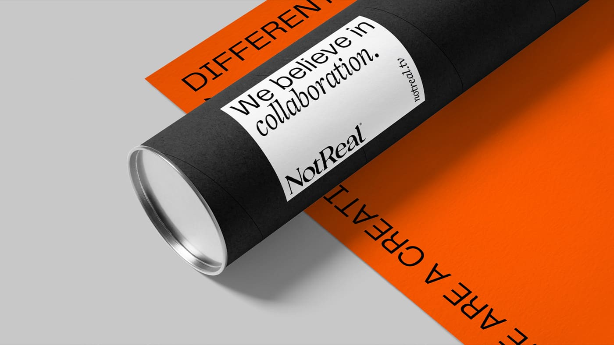

CASE STUDY #2 - EVALUATIVE

Timeline
Scale
Role
Team
By the end of 2024, 50% of service requests were being input via calls to CBRE call centers. Such a high rate of call center calls was resulting in call center employees spending less time on emergency or highly complex requests, instead spending much of their time on straightforward requests that should be able to be input via self-service.
As a team: Make improvements to the Self-Service Request flow so that calls to the Call Center go down, as measured by call center rate.
As a researcher: Identify if there is an underlying issue causing users to use the Self-Service Request less than expected. Determine what design improvements can be made to increase usability scores and usage of the Self-Service flow. I served as Lead UX Researcher for IFM Hub and owner of the quarterly User Experience Metric.
Qualitative Analysis of UEM Comments:
Testing of Problematic Flow:
February - Begin Analysis: Q1 (Baseline) UEM released in January; business problem identified in February.
March - Enhancement Release: Qualitative analysis of UEM responses, concept testing, design improvements and release.
Q2+ - Monitor: Using the rest of the year to monitor and complete retrospective on success of project.
The location selector within the request flow was unforgiving when attempting to input locations. This was uncovered in UEM qualitative analysis and confirmed in concept testing.
Insights led to a Jira ticket for design improvements and the design improvements were picked up by dev and released by the end of Q1.
18.4% reduction in call center request rate.
7% increase in total UEM score for the Self-Service module.
24 seconds time on task to select a location (baseline established).
Lack of Product Analytics: Product analytics capabilities matured throughout the year but were spotty before Q3 as events were being set up.
Quick Turnaround: A tight timeline limited research's ability to do more rigorous testing than concept testing.
Inability to Prove Causality: While we do see metrics like call center rate and UEM score improve, I did not A/B test these designs, so I have no way of truly identifying that these design improvements directly caused the improvements in metrics.
I'm always open to discussing new opportunities, research challenges, and how user-centered research can drive your product strategy forward.